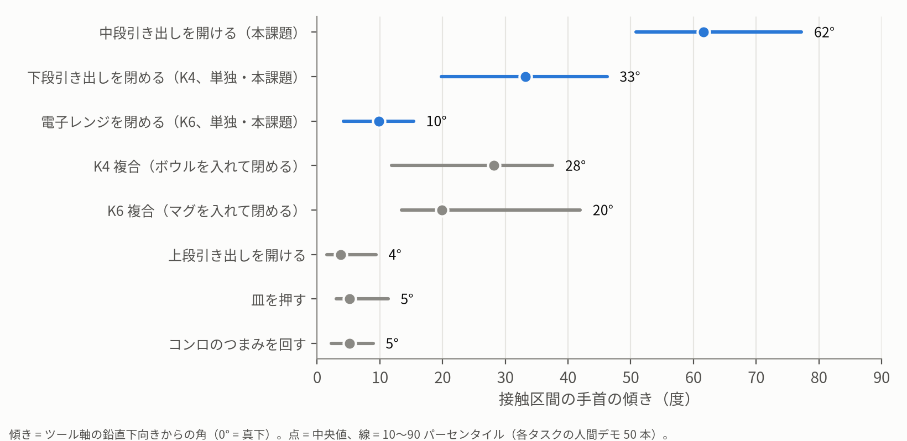
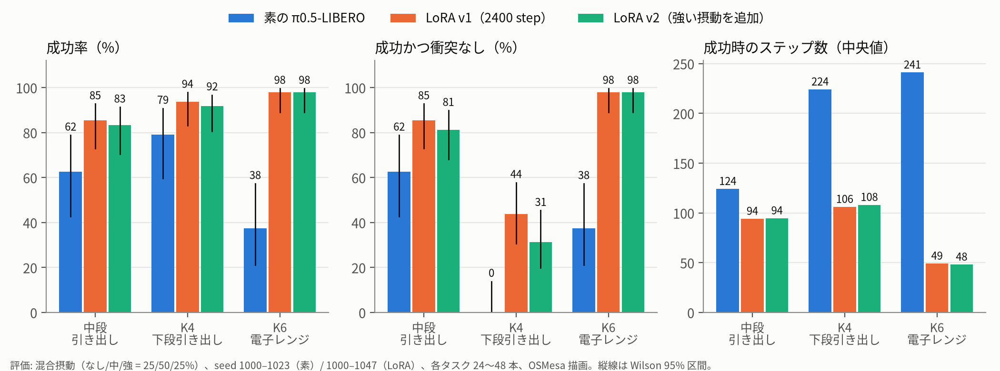
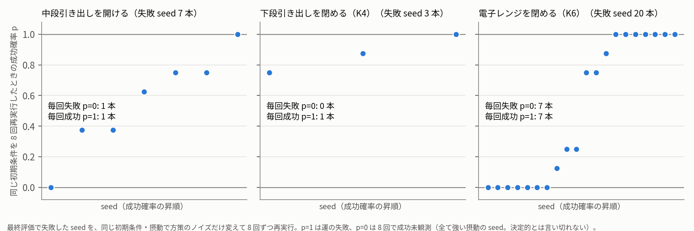
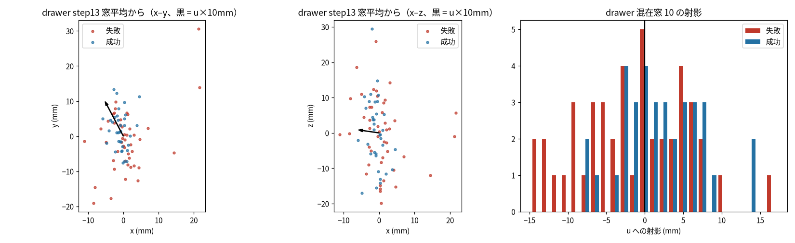
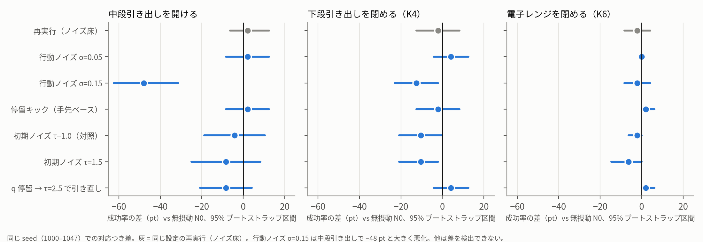
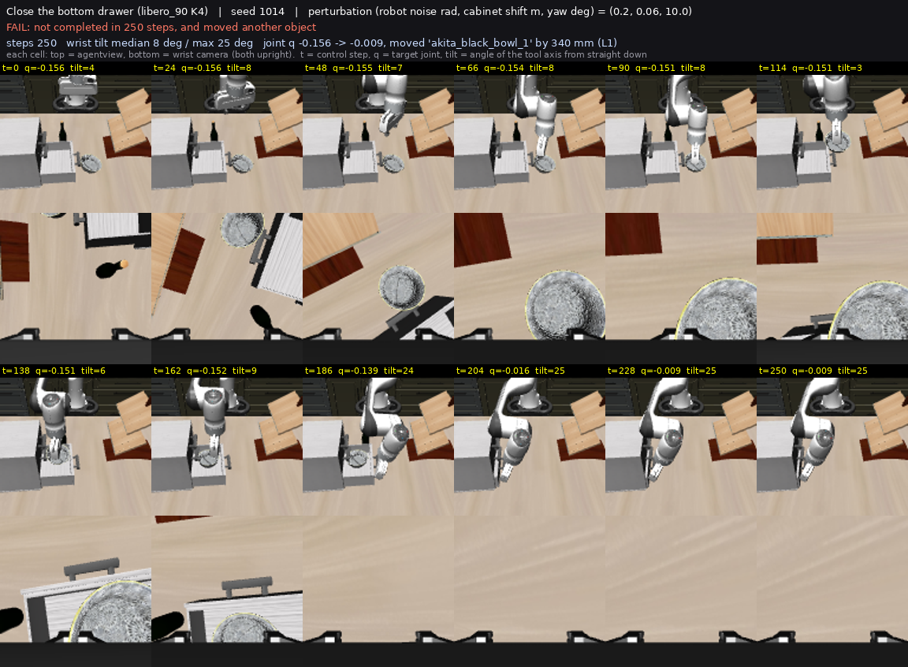
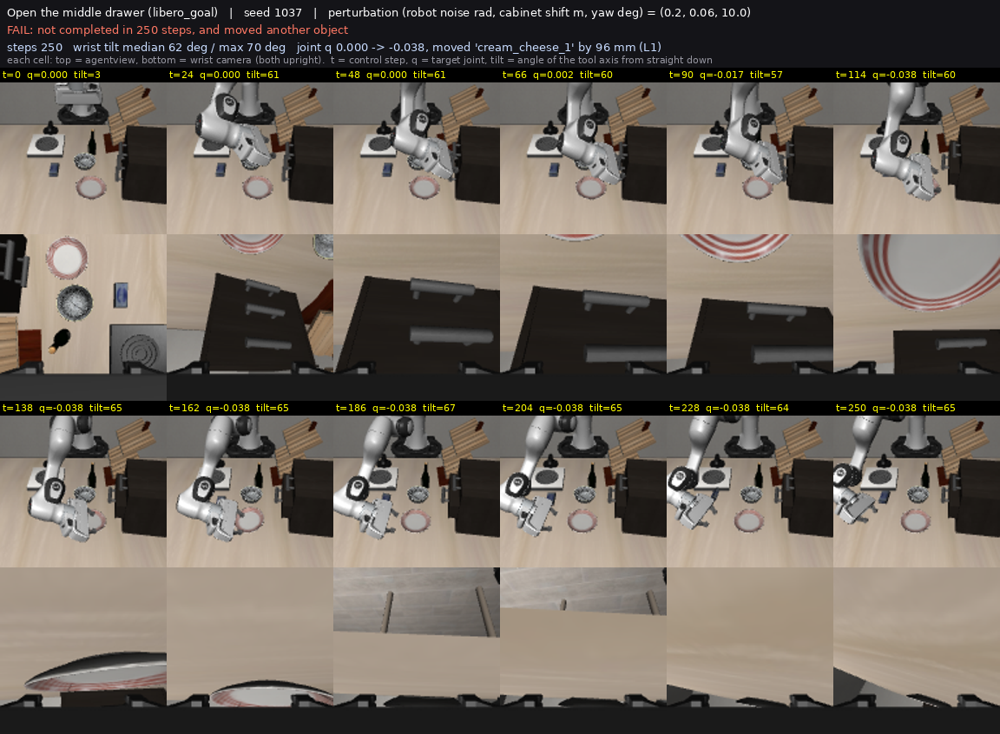
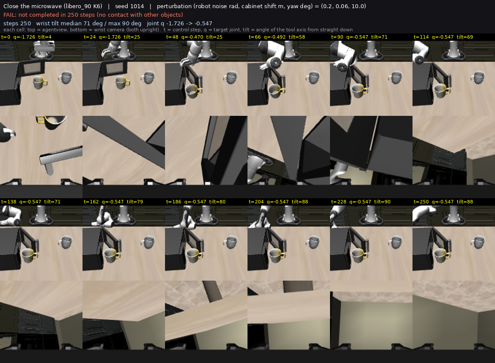

手首を傾けた接触操作を VLA に学ばせる
— π0.5 の LoRA 微調整の成果、残る失敗の原因の同定、そして三つの対処が効かなかった理由 —
Physical AI 2026 応用編 1 最終課題 ／ OmniCAMPUS アカウント名: ModaleAI ／ シミュレータ: MuJoCo（LIBERO-plus）、ロボット: Franka Panda
要旨. 真下に下ろした手では、手の本体や前腕が棚の前板・天板に当たって届かない「接触操作」がある。本課題では、(1) 人間デモの手首の傾きを接触区間ごとに測って傾きが本当に要るタスクを選び、(2) 傾けた姿勢で動くスクリプト expert を作って教師デモを生成し、(3) 公開の VLA（π0.5-LIBERO）を LoRA で微調整し、(4) 摂動付きの閉ループ評価で素のモデルと比べた。LoRA は成功率・衝突の少なさ・効率を大きく改善した（例: 電子レンジを閉める 38% → 98%、ステップ数 241 → 49）。本レポートの主題は、その後に残った失敗である。 同じ初期条件からの反復、状態の復元と分岐、手先位置の入れ替えという介入実験で、残る失敗を二つの群に分けて原因を同定した: (a) 配置で決まる群は expert 自身がその配置で失敗する（教師の限界の写し）、(b) 確率的な群は方策自身のサンプリングで接近の最初の数チャンクに手先位置が 1〜2 cm 散り、教師の狭い経路から外れた状態から成否が漸進的に決まる（共変量シフト）。この原因に対して三つの対処を、結果を見る前に固定した判定基準で試し、三つとも効かなかった: ① 強い摂動の expert デモを倍増した再学習（v2、+4 pt で基準 +15 pt に届かず）、② 方策が訪れた状態から expert を走らせた回復デモを足す DAgger 型の再学習（v3、主指標 −0.04、無摂動で退行の傾向）、③ 成功・失敗のラベルを付けた自己ロールアウトで結果条件付けし推論時に差を増幅する対照学習（C、方策はラベルを無視して AUROC 0.51、増幅の効果 0、データを足しただけで −0.08）。三つの否定的結果は一つの読みに収束する: 同じ方策・同じ expert から 1 周で作れるデータでは、分岐は直らない。 成否を決める差は観測から読めない第 1 チャンクの手先位置にあり、残るレバーは推論時に同じ状態から複数の標本を取り、先読みで選ぶ側にある。
1. タスクのコンセプト・目的
何を達成したいか. 引き出しや扉の取っ手に上から掴みに行くと、手首・前腕が棚の前板や上段の取っ手にぶつかる。人間は手首を倒して指を取っ手の裏に回し込む。この手首を傾けた接触操作を、模倣学習した VLA が再現できるかを調べ、再現できないときはなぜできないかを介入実験で突き止めることを目的にした。
タスク選びの根拠（人間デモの解析）. LIBERO の人間デモ（各 50 本）について、操作対象の関節が動く「接触区間」でのツール軸の傾きを測った（図 1）。当初の想定（引き出し・扉・押しの 3 動作は傾けないと届かない）は中段引き出しにしか当てはまらなかった。上段引き出し・皿押し・つまみは人間も 5° 以下でほぼ真下向きだったので、焦点を 3 タスクに絞った。
| タスク（LIBERO） | 人間デモの傾き（中央値） | 動作 |
|---|
| ① 中段引き出しを開ける（libero_goal） | 62°（51–77°） | グリッパを開いたまま、指のパッドを取っ手の棒の上面の奥の縁に乗せて約 200 N で引く |
| ② 下段引き出しを閉める（libero_90 K4） | 33°（20–46°） | 押しながら傾きを増やす。ボウルとワインボトルの間を通る |
| ③ 電子レンジを閉める（libero_90 K6） | 10°（4–15°） | 扉の固定点を押して閉める。人間は傾けない（傾きが要らない対照） |

図 1. 人間デモの接触区間の手首の傾き。青 = 本課題の 3 タスク。傾きが本質的に要るのは中段引き出し（約 62°）と、押しながら傾ける下段引き出し（約 33°）。電子レンジは約 10° で傾けない。
発見の経緯（正直に）: K4 は最初「開ける」動作と誤読し（実際は最初から開いていて「閉める」）、計画書を訂正した。窓の定義が変位の大きさだけで向きを区別していなかったため。
2. システム構成・技術選定
- シミュレータ: MuJoCo（LIBERO-plus の bddl・初期状態）、Franka Panda、OSC_POSE 制御（位置 ±5 cm/step、回転 ±0.5 rad/step）。
- 教師（スクリプト expert）: 人間デモの接触時点の姿勢を固定物の座標系で中央値化した「キーポーズ」を、実行時の棚・扉の位置と向きで世界座標に直して追従する。位置と全姿勢（クォータニオン）を目標にする制御器を新規に作った（既存のプリミティブは世界 z まわりの回転しか持たず、手首を傾けられなかった）。中段引き出しはキーポーズ追従、下段引き出しは前傾 +22° と高い経路の押し、電子レンジは扉の座標系の固定点を扉の動きに追従して押す。expert は決定的で、同じ初期状態からは同じ軌跡を出す。
- 方策（AI）: 公開の π0.5-LIBERO（3.617B、PyTorch 版に変換）に LoRA（r=16、α=32、attention+MLP、学習パラメータ 35.2M = 0.97%）。フローマッチングで 10 step の行動チャンクを出力し、先頭 5 step を使って再計画する。入力は agentview・手首カメラ（128px → 224px）、状態 8 次元、言語指示。
- データ: expert の成功かつ他の物体を 1 mm 超動かさない試行だけを記録。初期条件の摂動（ロボット初期関節、棚の位置・向き）を混ぜた。v1: 910 本 / 79,854 フレーム。v2: 1,928 本 / 172,990 フレーム（強い摂動を追加）。v3: v1 + 回復デモ 858 本 / 68,081 フレーム。C: v1 + 自己ロールアウト 369 本 / 38,192 フレーム（成功・失敗のラベル付き）。
- 学習: 全モデルとも同じレシピ 2,400 step、バッチ 16、lr 1e-4（RunPod の L40S、約 3.6 時間、5.2〜5.8 s/step）。v3 だけは step 2,000 でディスク容量の事故により停止し、同じ重みから残り 400 step を再開した（§4.4）。
- 評価: 閉ループ。成功（done）= bddl のゴール、衝突なし（clean）= 成功かつ対象外の物体の移動 ≤ 1 mm。摂動 3 水準（なし / 中 / 強）の混合と、強のみの集合。評価の seed は学習 seed と重ならない。方策サーバと、タスク × シャードの並列クライアント（OSMesa 描画）。
- 診断ハーネス（本課題で新たに作ったもの）: 毎 step の完全状態（
sim_state）・画像・接触力を記録する trace、記録した状態の復元と分岐（復元誤差 中央値 0.2〜0.8 mm）、成功本と失敗本の間で腕の状態・手先位置・手先回転だけを入れ替える介入（IK つき）、expert の局面機械を評価環境で任意の状態から走らせる機構、結果条件付きの方策を負の誘導で推論する方策サーバ。
- 既存の資源と本作業の新規性: シミュレータ（LIBERO-plus）、方策モデル（π0.5-LIBERO）、学習基盤（openpi）は公開のものを使った。サンプル課題の流用はない。本作業で新たに作ったのは、人間デモの接触解析、全姿勢追従の expert（3 タスク）、教師デモの記録、摂動付きの閉ループ評価、上記の診断ハーネスと三つの対処の実装、および動画・レポートの生成である。
- AI の活用: 推論（π0.5-LIBERO）と学習（LoRA 微調整）の両方を行った。
- AI 支援の使用: 本作業は Claude Code（Anthropic の AI コーディング支援）を用いて実装・実験・記録を行い、実験計画の批評に GPT-6 を 2 回用いた。判断・方針は人間（受講者）が承認した。
3. 工夫した点
3.1 教師の設計 — 接触の実体を力で調べた
中段引き出しの expert は、人間デモの手先位置を再現しても最初は 0/4 だった。接触を力つきで調べると、指のパッドが取っ手の棒の上面の奥側の縁に乗り、約 200 N で押しつけて引くことが分かった（棒の高さ補正 dz を 1.2 cm 下げるだけで 4/4、dz = 0 だけ全滅）。手先の位置だけでは分からない接触の実体で、これを反映して摂動下でも成功する expert になった。
3.2 評価と実験を信頼できるものにする工夫
- 事前登録: すべての実験で、設計・予測・採否の線（数値）を結果を見る前に作業履歴へ書き、結果はその線で判定した。線を後から動かしたことはなく、線の設計が悪かった場合はそのまま記録して「保留」とした（§4.1 の v3 の P1）。
- 操作チェック: 独立変数が本当に動いたかを必ず測った（例: 復元した状態の手先誤差 < 1.5 mm、入れ替えた手先位置の誤差 0.5 mm、結果条件付き方策の誘導で w = 0 が通常経路と一致）。
- 対応のある比較: 同じ seed で条件を比べ、同じ設定の再実行の差（ノイズ床、同一モデルの再評価差 ≈ 0.10）を必ず併記した。区間は seed 単位の bootstrap。
- 交絡の発見と固定: 評価の初期化で棚の素の位置がプロセスごとの乱数で数 mm（最大 16.8 mm）違っていた。これを trace に記録して固定し、「同じ初期条件」を厳密にした上で介入実験を行った。学習データは EGL、評価は OSMesa 描画（平均 6/255 の画素差）なので、すべての条件を同じ OSMesa で評価した。
3.3 結果: LoRA は素のモデルを大きく上回る

図 2. 素の π0.5-LIBERO と LoRA v1 の比較（混合摂動、同じ OSMesa）。成功率、成功かつ衝突なし、成功時のステップ数。縦線は Wilson 95% 区間。
| タスク | 素
成功 / 衝突なし / step | LoRA v1（提出モデル）
成功 / 衝突なし / step |
|---|
| 中段引き出し | 62% / 62% / 124 | 85% / 85% / 94 |
| 下段引き出し（K4） | 79% / 0% / 224 | 94% / 44% / 106 |
| 電子レンジ（K6） | 38% / 38% / 241 | 98% / 98% / 49 |
混合摂動。素 = 各 24 本、LoRA = 各 48 本（seed 1000–）。強い摂動だけの集合（seed 3000–、各 48 本）では v1 の衝突なし成功は中段引き出し 50〜60%、K4 52〜58%、K6 88% で、ここに残る失敗が §3.5 と §4 の対象である。
素のモデルの失敗の正体. K4・K6 で素のモデルの失敗例をコマ送りで見ると、「引き出しを閉める」「電子レンジを閉める」と指示したのに、学習済みの LIBERO-10 の元タスク（ボウル／マグを入れてから閉める）を実行していた。K4 の「衝突なし 0%」の実体は接触事故ではなく、指示にない動作（ボウルを持ち上げて運ぶ）を数えた結果だった。LoRA はこれを指示に従う短い動作に置き換えた（付録 B）。
3.4 残る失敗の原因を「介入」で同定した
LoRA 後も、強い摂動では 1〜4 割が失敗する。ためらい・途中や直前での停留（例: 引き出しが閾値まで 7 mm 足りないまま止まる）が典型で、1 例のコマ送りでは原因が分からない。そこで観察ではなく介入で原因を絞った。各段の線と判定は作業履歴に事前登録してある。
- 反復（運か、決定的か）. 最終評価で失敗した seed 30 本を、同じ初期条件で方策のノイズだけ変えて 8 回ずつ再実行した（図 3）。内訳は 運（8 回中 1 回以上成功）17、8 回とも失敗 8、中間 5。「失敗の 1/3 が運、1/3 が決定的」という最初の要約は誤りで、訂正した（選抜 seed の割合であり、8 回失敗も「成功確率 < 0.31」でしかない）。
- 観察（停留の実体）. 毎 step の完全状態と接触力を記録して 168 本を走らせた。失敗は停留 56 本・衝突のみ 25 本で、停留は接触の後に始まり（中央値 step 44）、方策の指令は小さくない（基準の 1.1 倍）のに手先が動かない。
- 停留は吸収状態（局所介入 I1〜I3）. 停留中の状態を復元して方策を再サンプルしても最終成功は 3〜6%、3 cm の退避や初期姿勢への退避でも 7〜16%。逆に、停留の 20 step 前の状態から分岐すると成功は 14%、接近の始点（t = 0）からなら 31%。成否は接近の途中で漸進的に決まり、停留に落ちてからは戻れない。 停留検出 → 退避 → 再試行の推論側ラッパも、確率的な群で −0.06 と効かなかった。
- 担い手は手先の位置（I4・I5）. 同じ seed の成功本と失敗本の間で、接近の 1/3 の時点の腕の状態だけを入れ替えて 8 本ずつ走らせた（28 組、1,120 本）。失敗本の状態からの成功確率 0.33 が、腕の状態を成功本のものにすると 0.68（成功本そのものと同じ）になる。IK で分解すると、手先の位置だけを入れ替えても 0.62、回転だけでは 0.35、冗長自由度の差は 0.015 rad でほぼ無く、関節速度・指も担い手でない。
- 揺らぎの出どころ（L1、図 4）. 同一の初期状態から 8 本走らせた手先位置の広がりは、step 13 で SD 11〜23 mm（中段 11.1 / K4 15.5 / K6 22.9）。教師デモの同じ時点の広がりは z 方向で 0.6〜0.8 mm（expert は決定的）で、方策の経路は成功も失敗も教師の分布の外にあり、平均も教師から 1〜2 cm ずれる。しかし成功と失敗を分ける共通の方向は無い（窓を跨ぐ AUROC 0.44〜0.56、帰無 ≈ 0.5）し、失敗は外れ値でもない（窓平均からの距離の AUROC は帰無と同じ）。
- 教師の限界（I6）. expert を評価環境で走らせると、8 回とも失敗した 7 seed では expert も 0/7、運の群では 7/8 成功。教師データは成功したデモだけを残すので、expert が失敗する配置は構成上学習分布に無い。一方、失敗本の接近途中の状態から expert を走らせると 43〜50% で回復でき、成功本の状態からの 50〜57% と大差ない。

図 3. 失敗した seed の反復成功確率（8 回）。p = 1 は運、p = 0 は「8 回で成功未観測」（決定的とは言い切れない）。p = 0 の seed は全て強い摂動の seed で、§3.4-6 の expert も失敗する配置と一致する。

図 4. 中段引き出し、同一の初期状態から 8 本ずつ走らせた step 13 の手先位置（窓平均からの偏差、固定具座標）。赤 = 失敗、青 = 成功。方策のサンプリングだけで 1〜2 cm 散り、成功と失敗は混在して片側に偏らない。右は成功・失敗の平均方向への射影。
原因の同定（事前登録の線で確定）.
- 配置で決まる群（強い摂動の一部）= expert 自身がその配置で失敗する。方策の失敗は教師の限界の写しで、学習側では救えない。対処は expert の改良（電子レンジの押し戦略、引き出しの許容）が前提。
- 確率的な群 = 共変量シフト。方策は接近の最初の数チャンクで、自身のサンプリングにより教師の狭い経路（SD < 1 mm）から 1〜2 cm 外れ、教師に手本の無い状態から自力で進む。そこからの成否は手先の位置に依存して漸進的に決まり、接触で停留（吸収状態）に落ちる形で現れる。expert はその状態から回復できる。
- 中間群 = expert が失敗する配置で方策が時々成功する群。
4. 苦労した点・課題・今後の展望
4.1 三つの対処は、いずれも事前の線で効かなかった（否定的結果）
原因（確率的な群 = 教師の経路からの分岐）に対して、三つの対処を順に試した。いずれも線を結果の前に固定し、同じ seed で v1 と対応させて比べた。
① v2: 強い摂動の expert デモを倍増して再学習. 8 回とも失敗する seed が全て強い摂動だったので、強い摂動のデモを足して最初から再学習した（910 → 1,928 本、同じ 2,400 step）。線: 強い摂動のみの評価で中段引き出し +15 pt 以上、符号検定 p < 0.1、混合で −6 pt を超える悪化なし。
| 強い摂動のみ（seed 3000–3047、各 48 本） | v1 成功 | v2 成功 | 勝ち/負け（同一 seed） | 符号検定 p | 衝突なし v1→v2 |
|---|
| 中段引き出し | 56% | 60% | 9 / 7 | 0.80 | 24→24 |
| 下段引き出し（K4） | 88% | 88% | 3 / 3 | 1.00 | 25→22 |
| 電子レンジ（K6） | 88% | 94% | 4 / 1 | 0.38 | 42→45 |
判定: 改善を検出できず。 中段引き出しは +4 pt。K4 の衝突なしは混合評価で 44% → 31% と下がった。電子レンジの線（+15 pt）は v1 が 88% で達成不能な設計ミスだった（線は変えず記録）。読み: 配置で決まる群は教師が通らない配置なので、同じ expert のデモを増やしても分布は広がらない。これは後の I6（expert 0/7）で裏づけられた。
② v3: 方策が訪れた状態から expert を走らせた回復デモ（DAgger 型）を足して再学習. 確率的な群の原因が「教師の経路から外れた状態に手本が無い」ことなら、方策自身の経路上の状態に expert のラベルを与えれば直るはずである。v1 方策の新規 seed 300 本の rollout から、接触前の t ∈ {5, …, 40} で状態を復元して expert を走らせ、衝突なしで成功した 858 本（68,081 フレーム、由来は成功 rollout が 94%）を v1 のデモに足した（フレーム比 54 : 46）。同じレシピで学習し、v1 の再評価と同時刻に同条件で評価した。
| # | 線（結果の前に固定） | 結果（v3 − v1、seed 対応、95% 区間） | 判定 |
|---|
| V1 主 | 未使用 seed・強い摂動の中段引き出し + K6 の衝突なし成功（96 本）≥ +0.10 支持 / ≤ +0.03 反証 | −0.042 [−0.135, +0.052]（0.667 → 0.625） | 反証 |
| V2 機構 | 運の群 8 seed × 8 回の成功 ≥ +0.15 / ≤ +0.05 | −0.062 [−0.203, +0.062] | 反証 |
| V3 対照 | 8 回失敗の 7 seed は \|Δ\| ≤ 0.05（配置群には効かないはず） | +0.054（0/56 → 3/56） | 保留 |
| V4 退行なし | 混合評価の各タスク衝突なし > −0.06 | 中段 −0.062 / −0.083、K6 −0.021 / −0.062、K4 +0.229 [+0.062, +0.396] | 反証（K4 のみ改善） |
注記（正直に）: v3 の学習は step 2,000 でディスク容量の事故により止まり、同じ重みから 400 step を再開した（最適化器の状態は初期化、学習率は全体の 1%、重みの変化は直前 400 step の 1/6）。再開が退行を作った可能性を step 2,000 の重みの再評価で切り分けたが、揺らぎと区別できず（無摂動の中段引き出しの衝突なし: v1 24/25、v3 18/25、v3@2000 20/25）、「v1 より低い傾向」と弱めて記録した。K4 の改善は、K4 の回復デモの受理（ボウルを動かさない expert 走行だけ）が「物体を動かさない押し閉め」に偏った効果と読む（仮説）。事後解析では、接触直前（t ≥ 35）の分岐で expert が局面機械を先頭からやり直すため、方策が「進む」状態で「戻る」を教えるデモが約 25% あった（様式の衝突、保留）。
③ C: 成功・失敗のラベルを付けた自己ロールアウトで結果条件付けし、推論時に差を増幅する対照学習. 同じ配置・同じ初期状態から成功本と失敗本が出るなら、両者の差を学習で切り出し、推論時に成功側へ増幅できるはずである。v1 方策の強い摂動の rollout（seed 8000–8099 × 8 本 × 3 タスク）から同じ初期状態で両方の結果が出た窓だけ（中段 37 / K4 48 / K6 18 窓、配置でラベルが当たる近道を塞ぐ）を取り、指示文の末尾に「(outcome: success)」「(outcome: failure)」を付けて v1 のデモ（成功ラベル）と合わせて同じレシピで学習した（失敗ラベルは全フレームの 15%）。推論時はフローマッチングの速度場を v = vs + w (vs − vf) とする負の誘導で差を増幅する。閉ループの前に前提試験を置いた: 学習に使っていない窓で、同じ時刻・同じノイズのもと、成功本の損失が成功ラベルで低くなるかを AUROC で測る（線: 第 1 チャンク ≥ 0.60 かつ 16〜40 step ≥ 0.70 で通過、≤ 0.55 かつ ≤ 0.60 で不通過）。
| 前提試験（score = Lfail − Lsucc の AUROC、順列帰無 ≈ 0.50） | ≤ 15 step | 16–40 | > 40 |
|---|
| 学習外の窓（189 本） | 0.51 | 0.46 | 0.50 |
| 学習に使った窓（369 本） | 0.54 | 0.50 | 0.53 |
| 失敗ラベル 45% の rollout だけで 1,600 step 継続後、学習外の窓 | 0.51 | 0.51 | 0.50 |
| 同、学習に使った窓 | 0.57 | 0.58 | 0.56 |
前提試験は不通過。 方策は結果ラベルをほぼ無視し（成功ラベルと失敗ラベルで速度場の差は 0.4〜1.1%）、学習窓で露出を倍にすると覚え始めるが学習外の窓には般化しない。事前登録の分岐に従い、閉ループは対照（w = 0）と w = 1.5 だけを強い摂動 48 seed × 3 タスクで測って閉じた。
| 強い摂動（seed 3000–3047）、衝突なし成功 | v1 | C(w=0) | C(w=1.5) | C(0) − v1（seed 対応） | C(1.5) − C(0) |
|---|
| 中段引き出し | 29/48 | 24/48 | 26/48 | −0.10（3 勝 8 敗） | +0.04（7 勝 5 敗） |
| 下段引き出し（K4） | 28/48 | 17/48 | 20/48 | −0.23（2 勝 13 敗） | +0.06（6 勝 3 敗） |
| 電子レンジ（K6） | 42/48 | 39/48 | 37/48 | −0.06（0 勝 3 敗） | −0.04（1 勝 3 敗） |
| 中段 + K6（主）／3 タスク | 71/96 ／ 99/144 | 63/96 ／ 80/144 | 63/96 ／ 83/144 | −0.083 ／ −0.132（5 勝 24 敗、p 5e-4） | 0.000（8 勝 8 敗）／ +0.02 |
判定: 増幅の効果は 0、ラベル付きの自己ロールアウトを足しただけで害（線 ≤ −0.08）。 害は全て打ち切りの増加（中段 18 → 24、K4 3 → 14、K6 6 → 9 本）で、衝突も成功本の速さも変わらない。失敗ロールアウト（停留）の 18k フレームを、ラベルで切り分けずに行動として吸収した、と読むのが素直である（成功ロールアウトだけの対照は置いていないので、自己模倣そのものの害とは切り分けていない）。
4.2 なぜ三つとも効かなかったか — 一つの読み
三つの結果は、§3.4 の原因と合わせると一つの機構で説明できる。確率的な失敗は方策自身のサンプリングの散りが作る共変量シフトなので、ある観測に対する行動の分布は、成功本でも失敗本でも同じである（どちらも同じ方策の標本）。したがって、
- フレーム単位のラベル（結果条件付け）には、分岐が決まる第 1 チャンクで掴むものが無い。実際、ラベル無しの素の損失が成功と失敗を分けるのは分岐の後（> 40 step、停留に入ってから）だけで（AUROC 0.61）、第 1 チャンクでは 0.49 だった。同じ理由で、フレーム単位の早期の選別器も作れない。
- expert のラベル（回復デモ）は状態には与えられるが、方策が「教師の経路から外れた」状態を選んで与えなければ、既に手本のある状態に別の様式を重ねるだけになる（v3 の様式の衝突）。しかも散りは共通の方向を持たず外れ値でもないので、「外れた状態」を観測から選ぶ規則が無い。
- 同じ expert のデモを増やしても（v2）、expert が通らない配置の群には届かない。
結論: 同じ方策・同じ expert から 1 周で作れるデータ（デモの増量、回復デモ、ラベル付き自己ロールアウト）では、分岐は直らない。 成否を運ぶ量は第 1 チャンクの手先位置 1〜2 cm であり、それは行動の後にしか現れない。残るレバーは、推論時に同じ状態から複数の標本を取り、先読み（展開して確かめる）で選ぶ側にある。これは特権情報か学習した予測器を要するので、本課題の範囲では実装していない。
4.3 停留対策の摂動（講座での助言）も、検出可能な改善にならなかった
原因を同定する前に、「フローマッチングの停留対策としての摂動」を、行動ノイズ・手先ベースの停留キック・初期ノイズのスケーリング・関節の停留検出からの引き直しで試した（図 5）。事前の線（成功率 +10 pt 以上かつ衝突なしが 5 pt 超下がらない）を満たす条件は無かった。行動ノイズ σ = 0.15 は中段引き出しを 85% → 38% に悪化させた（成功の回廊が約 1 cm のため）。§3.4 の「停留は吸収状態」が、これらが効かない理由である。

図 5. 無摂動に対する成功率の差（同一 seed、95% ブートストラップ区間）。灰 = 同じ設定の再実行（ノイズ床）。
4.4 苦労した点（実装・運用）
- 評価環境: 描画（EGL 不可）、画像効果ライブラリ、遠いデータセンタの低速転送、ファイルディスクリプタのリーク（環境を作り直すたびに増え、約 20 エピソードで上限。「メッシュが見つからない」という紛らわしいエラーになった）。
- 「同じ初期条件」が同じでなかった: 棚の素の位置がプロセスの最初の乱数で決まり、シャードごとに数 mm 違っていた。復元の誤差が毎回違うことから気づき、trace に記録して固定した。介入実験はこの固定の後に行った。
- ディスク容量の事故: GPU インスタンスのボリューム上限は
df に出ず、二つの作業が同じボリュームに書いたため、v3 の学習が step 2,000 で音もなく止まり（ログへの書き込み自体が失敗するので Traceback も残らない）、同時に走っていた rollout も 4 本が壊れた。以後、大きな書き込みの前に試し書きで余地を測り、書込量を取り決め、完了フラグは終了状態で gate するようにした。
- 解析スクリプトのラベル判定のバグ: 前提試験の自動判定が、ラベル文字列の比較ミスで全て無効（AUROC が nan）になっていた。生データからラベルを結合して別経路で再計算し、修正版と一致することを確かめてから採用した。
- 大きな評価の前の煙検査: 摂動試験の最初の起動は待機条件とコードのバグで約 35 分を無駄にした。以後、1 エピソードの煙検査と進捗の確認を必須にした。停止した GPU インスタンスは元のホストの GPU が埋まると再開できず、再開できても内蔵ディスクが初期化されるので、回収してから止める運用にした。
4.5 限界
- 評価は学習データと同じ摂動の分布で、汎化（未見のタスク・物体・実機）は未検証。学習 seed は 1 つ。同一モデルの再評価差が ≈ 0.10 あり、n = 48 の線は効果量 0.1 未満を判別できない。
- v3 は再開を含む学習で、退行の主張は弱めてある。C は成功ロールアウトだけの自己模倣対照を置いていない。対照学習の露出は 1 epoch 未満で、「露出不足」は完全には切れていない（ただし学習窓だけ上がり学習外が動かない形は記憶であって般化ではない）。
- K4 の衝突なし 44% は expert の受理率（43%）・人間デモ（約 50%）と同程度で、配置上ボウルに触れやすい。描画の差（EGL と OSMesa）により絶対値は EGL と異なりうる。
4.6 今後の展望
- 配置で決まる群: expert の改良（電子レンジの押し戦略、引き出しの許容）で教師の被覆を広げる。学習側では救えないことが分かっているので、ここに先に手を入れる。
- 確率的な群: 推論時に同じ状態から複数の行動チャンクを標本化し、学習した予測器（世界モデル）で先読みして選ぶ。本課題の結果は、選別器がフレーム単位の観測からは作れず、展開した帰結を見る必要があることを示している。データ側で続けるなら、分岐点を「教師の経路から 10 mm 超外れた状態」に限り、expert の戻り局面を除き、DAgger を反復する。
- 複合タスク（ボウル／マグを入れてから閉める）と実機への展開。傾けた把持は庫内の高さが低い電子レンジへの配置にも要る。
付録 A. 再現性
公開 GitHub リポジトリに、人間デモの解析、キーポーズの抽出、3 つの expert、デモ記録、学習・評価のスクリプト、診断ハーネス（trace・復元と分岐・入れ替え介入・結果条件付きの方策サーバ・前提試験）、作業履歴（判断・失敗・訂正を時系列で記録）と実験計画（線の事前登録を含む）を含む。重み・データは容量のため含まない（再生成の手順を同梱）。リポジトリ URL: https://github.com/yniwaeiai/PhysicalAIa1_01
付録 B. 失敗例のコマ送り（代表）
各図は 12 コマ（上段 agentview、下段 手首カメラ）。同じ seed・同じ摂動で、素のモデルと LoRA を並べた。

図 B1. 素のモデル、下段引き出し（K4）: ボウルを 340 mm 動かし（指示にない動作）、引き出しは閉まり切らず時間切れ。

図 B2. LoRA、中段引き出し（強い摂動の seed）: 傾きは約 62° と正しいが、引き出しは 3.8 cm しか開かず（成功は 14 cm）、その後は皿の方へ迷走してチーズを 96 mm 動かし、時間切れ。§3.4 の「停留」の典型。

図 B3. LoRA、電子レンジ: 扉を途中（q −1.73 → −0.55、閉じ切りは約 0）まで押して停留し、時間切れ。
付録 C. 事前登録した線と結果の一覧
| 実験 | 主指標と線 | 結果 | 判定 |
|---|
| LoRA v1（主結果） | 学習した基底の未使用の初期状態で、成功かつ衝突なし ≥ 50% | 85% / 44% / 98%（混合） | 通過（K4 は衝突なしで未達） |
| 停留対策の摂動 | 成功率 +10 pt 以上かつ衝突なし −5 pt 以内 | 最大 +3 pt、行動ノイズは −47 pt | 該当条件なし |
| v2 デモ倍増 | 強い摂動の中段 +15 pt、p < 0.1 | +4 pt、p 0.80 | 改善を検出できず |
| 原因の介入（I4・I5） | 腕の状態の入れ替えで成功確率が ≥ +0.25 付いてくる | +0.35（位置だけで +0.29、回転 +0.02） | 支持 → 原因 = 手先位置 |
| 原因の照合（L1・I6） | 共通方向 AUROC ≥ 0.65 / expert の配置被覆 ≤ 0.3 | 0.44〜0.56 / 0/7 | 共通方向なし・教師の限界 |
| v3 回復デモ | V1 ≥ +0.10 / V2 ≥ +0.15 / V4 > −0.06 | −0.04 / −0.06 / 中段 −0.06〜−0.08 | 反証・反証・反証 |
| C 対照学習 | 前提 AUROC ≥ 0.60 ∧ 0.70 / C5 害 ≤ −0.08 | 0.51 ∧ 0.46 / −0.083 | 不通過・害あり |